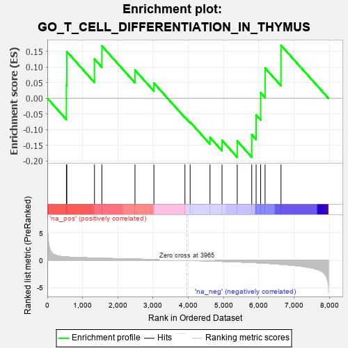
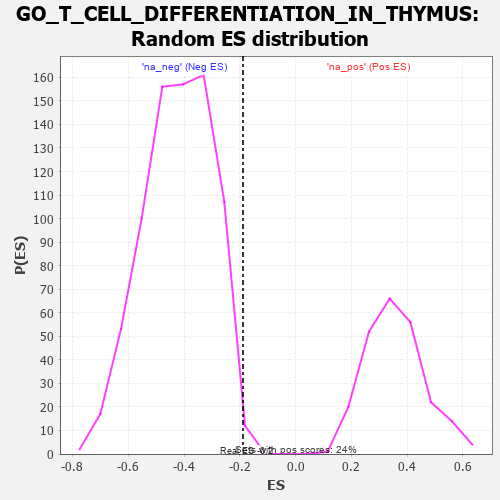

| | | Dataset | 7d |
| Phenotype | NoPhenotypeAvailable |
| Upregulated in class | na_neg |
| GeneSet | GO_T_CELL_DIFFERENTIATION_IN_THYMUS |
| Enrichment Score (ES) | -0.18846595 |
| Normalized Enrichment Score (NES) | -0.44698778 |
| Nominal p-value | 0.99346405 |
| FDR q-value | 1.0 |
| FWER p-Value | 1.0 |
Table: GSEA Results Summary

Fig 1: Enrichment plot: GO_T_CELL_DIFFERENTIATION_IN_THYMUS
Profile of the Running ES Score & Positions of GeneSet Members on the Rank Ordered List
| PROBE | GENE SYMBOL | GENE_TITLE | RANK IN GENE LIST | RANK METRIC SCORE | RUNNING ES | CORE ENRICHMENT | | 1 | SRF | | | 542 | 0.615 | 0.0410 | Yes |
| 2 | JMJD6 | | | 553 | 0.613 | 0.1486 | Yes |
| 3 | NKAP | | | 1337 | 0.422 | 0.1251 | Yes |
| 4 | SOS1 | | | 1547 | 0.384 | 0.1670 | Yes |
| 5 | ZC3H8 | | | 2486 | 0.229 | 0.0898 | Yes |
| 6 | WNT4 | | | 3023 | 0.146 | 0.0483 | Yes |
| 7 | JAG2 | | | 3903 | 0.010 | -0.0604 | Yes |
| 8 | ATG5 | | | 4051 | -0.016 | -0.0761 | Yes |
| 9 | GATA3 | | | 4614 | -0.120 | -0.1253 | Yes |
| 10 | PRKDC | | | 4955 | -0.189 | -0.1344 | Yes |
| 11 | FZD5 | | | 5386 | -0.292 | -0.1365 | Yes |
| 12 | ADA | | | 5798 | -0.405 | -0.1162 | Yes |
| 13 | STK11 | | | 5922 | -0.443 | -0.0531 | Yes |
| 14 | FZD8 | | | 6051 | -0.490 | 0.0178 | Yes |
| 15 | RAG1 | | | 6176 | -0.530 | 0.0964 | Yes |
| 16 | RABL3 | | | 6627 | -0.727 | 0.1689 | Yes |
Table: GSEA details [plain text format]

Fig 2: GO_T_CELL_DIFFERENTIATION_IN_THYMUS: Random ES distribution
Gene set null distribution of ES for GO_T_CELL_DIFFERENTIATION_IN_THYMUS